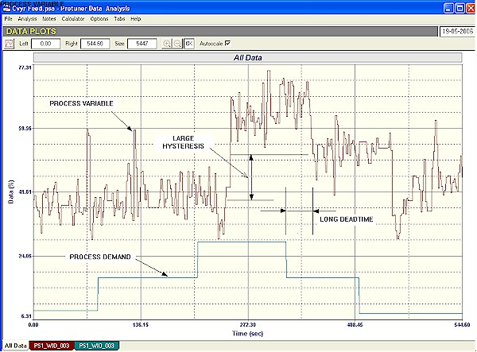
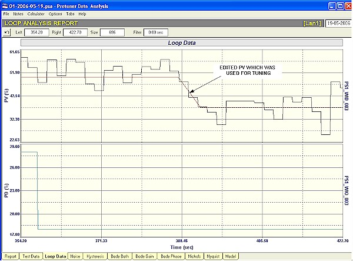

|
| [Home] [About us] [Contact us] [Training] [Optimisation services] [Protuner] |
| [Loop signatures] [Case histories] [Continuous loop performance monitoring] |
|
Control Loop Case History 91 MAYHEM IN THE MINES I have recently been doing some optimisation work on some platinum and gold mines and associated mineral plants. The state of the control loops in these plants is pretty bad, with extremely few loops operating anywhere near what could be termed efficiently when in automatic. This is of course not really different from most plants of all other types that I go into. However as mentioned in a previous article, mines have their own particular problems. They usually have pretty difficult materials to handle, which are often extremely abrasive (like slurries), and may have widely varying consistency like ore being fed to a grinding mill. Slurries also tend to block pipes and valves if their velocity goes too low, or if they get too thick. Control equipment also has to often operate in extremely tough environmental and other difficult conditions. As a general rule, good control dictates the use of good control valves. However high quality control valves cannot be used in most slurry applications due to the abrasion. Therefore relatively crude valves like pinch, diaphragm operated valves, and more recently "Dart" valves are being used. (I also had a technician on a course last week who has had relatively good results on slurries with polyurethane coated butterfly valves). All these facts make good control more difficult in the mining environments. Another complicating factor is that the control systems used by most mines are of the PLC/SCADA type, rather than DCS. One of the main reasons for this (apart from cost) is that that the analogue I/O count on a mine is small compared with the digital I/O count, and this is powerful argument for the use of PLC's. In any event, this increases the control problems. I have found that there are far more control problems with controllers in "PLC plants" than there are in "DCS plants". This is due to the fact that the PID control blocks are incorrectly set-up in about 80% of the plants I visit. Apart from this, PLC's generally have very limited analogue control capabilities as compared with DCS's. The example that will be presented later in this article is that of the control of a feed conveyor which exhibited a rather unusual problem. A feed conveyor consists of conveyor belt fitted with a weightometer feeding product at a certain rate to a plant. Most mines have quite a few of these systems. On a typical mine feed conveyor, the ore is typically fed onto the conveyor via a vibratory feeder or a belt feeder. (There are also many other types of feeders). A weightometer (usually mechanical, but nuclear systems are also used) measures the mass on the belt. The signal from this is fed to a controller , the output of which goes back to the feeder. In general, feed conveyor systems are usually terribly badly tuned. In many mines, I have found them running continually in manual because the tuning is just too bad for them to operate in automatic. The reason for this is lack of training on practical control and because there are specific problems associated with conveyor feeds that one needs to understand to make the controls work nicely. The typical problems (from the control point of view) that are found on these systems are: 1. Noise The PV (process variable) signals from weightometers are usually extremely noisy. In the case of feeds to autogenous mills particularly, the noise amplitude may exceed 10%, which is largely due to the wide range of sizes of particles and rocks in the ore on the belt. These noisy PV signals are generally heavily filtered. One of the reasons for this is to allow operators to read the mass on digital indicators. Another reason is that modern digital measuring and control equipment generally incorporate a virtually unlimited filtering facility. People with little understanding of the effects of noise and the problems that are introduced by large filters, tend to over-filter PV signals. This hides the noise and other problems and makes the control look a lot better. Unfortunately it does not giving a true reflection of what is going on in the process. A filter is also a first order lag, and heavy filtering completely distorts the true process dynamics. Noise in fact does not generally have much deleterious effect on process control unless it is amplified through the proportional gain amplifier in the controller, and is then aliased sufficiently to allow the emergence of low frequency large amplitude components. These may then start the valve jumping around, which can shorten its life, and if the process is fast enough to react to the valve movements, control variance will increase. However this usually only occurs on level controls where there are normally higher gains in the controller than on most self-regulating processes, or in cases where the noise frequencies are extremely slow. In the case of a feed conveyor, the noise is at a fairly high frequency, and the gain in the controller is usually very small, so in fact the noise is actually attenuated through the controller. I normally never use a filter at all in these applications. However the real problem with noise in control then emerges, and this is with operating personnel, who are used to seeing very straight lines on trends and steady digital displays. If they see trends or numbers jumping around, they immediately think the control has gone unstable. This is one of my biggest problems. I remove filters from loops, and tune them much better. People then immediately complain that it was nice and stable before I came and messed it up. They find it hard to believe that what they were seeing before was actually not what was really going on in the process. 2. Deadtime The second major problem with the control of feed conveyors is the fact that very often the weightometers are situated far away for the point where the ore is fed onto the belt. This may be due to poor design, but sometimes it is for very good reasons. For example the feed-point may be at the bottom of an ore silo, and the conveyor then immediately slopes upwards into the plant. Mechanical weightometers can not be installed on an inclined belt, so the weightometer has to be installed at the top of the incline. The resulting transport delay, which is the time taken for the ore to pass from the feed-point to the weightometer sensing unit, introduces deadtime into the measurement. As discussed in chapter 4 of my CD "Trouble Shooting and Loop Tuning", deadtime is the control engineer's enemy as it the dynamic that introduces phase lag into the loop. Unfortunately deadtime dominant loops are difficult to tune, and very few people understand how to do this. In spite of claims by sometimes learned academics to the contrary, in fact it is not that difficult to tune such processes. However it becomes necessary to slow the control response down, sometimes quite considerably, to prevent instability. Once properly tuned, such loops perform reasonably well, provided load changes do not occur too frequently. (There are in fact special dead-time controllers available on the market, often referred too as model predictive controllers. However I have personally never found these working very well in practice, and have had much better results with a well tuned PI controller which does not rely on a model that will probably be changing with differing process conditions). In general and over quite a few years I have very successfully optimised quite a few conveyor feed systems previously running continuously in manual, or else very badly in automatic, without the need for filters, and by ensuring the tuning was stable. The example given here was of a feed conveyor in a mining plant that exhibited an unusual problem, or certainly one that I had not encountered before on this type of process. The recording shown in Figure 1 is that of an open loop (controller in manual) test on the feeder. The filter had been removed from the measurement and it is interesting to see the high noise level on the PV signal (the mass signal).  Figure 1 Shortly after the test was started, the PD (controller output) was stepped up by 10%. There was very little effect on the PV even after waiting for several minutes. A further 10% step was then made, and after quite a few seconds deadtime had elapsed, a definite increase was observed in the PV. The PD was then stepped back down by 10%, and it can be seen how the PV only responded by a relatively small amount, which was about half the size of the previous up movement. A further step downwards resulted in a bigger response again. This type of response where smaller movements of the final control element occur after a reversal in direction are very typically found on pneumatically operated valves suffering from hysteresis of which must has been written in these articles. However I have never seen it before in conveyor feed systems. In this case it was found that there was a problem with some hydraulic valve in the feed system, and it was in fact large hysteresis. Hysteresis in self-regulating loops results in a much slower control response, and increases control variance considerably, because every time the final control element needs to be reversed, the controller output has to move back completely through the hysteresis band, before the element can start moving again. This in conjunction with the extremely long dead-time which can also be seen in the figure, really affected the control very badly. Figure 2 shows how one selects a response to tune a process like this. Firstly obviously the tuning has to take the deadtime into account and this will require a very small gain in the proportional term in the controller. Any good tuning package like the Protuner would automatically take this into account.  Figure 2 The other most important thing is to get the correct response to a step change to use for the tuning, particularly in this case where hysteresis is involved. The step must be one where the process gain is the highest, which means that one must ensure the movement in PV is free of valve hysteresis. Then as the noise level is so high compared with the movement in PV, it is essential that one draws a line (or edit) through the noise to get a true representation of the process response. The edit used in this case is shown in Figure 2. It will be noted that the correct response is a ramp as opposed to the normal exponential response normally encountered with most process responses. This is in fact typical of the conveyor feeds. Once tuned correctly the control was really vastly improved. It will be really excellent once the hysteresis is eliminated. A further article in this Case History series at a later date will also show some more examples taken from mines. Michael
Brown is a specialist in control loop optimisation, with many years of
experience in process control instrumentation. His main activities are
consulting, and teaching practical control loop analysis and
optimisation. He gives training courses which can be held in clients'
plants, where students can have the added benefit of practising on live
loops. His work takes him to plants all over South Africa, and also to
other countries. He can be contacted at:
|